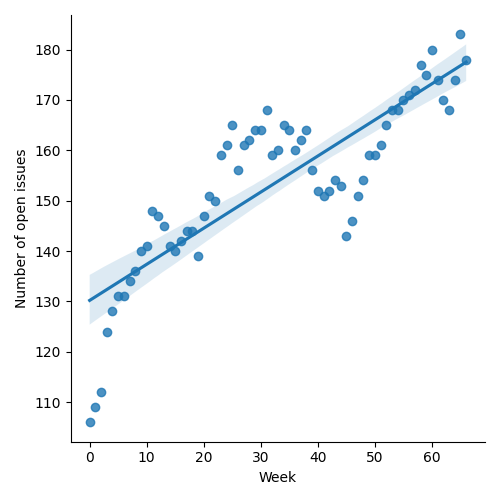
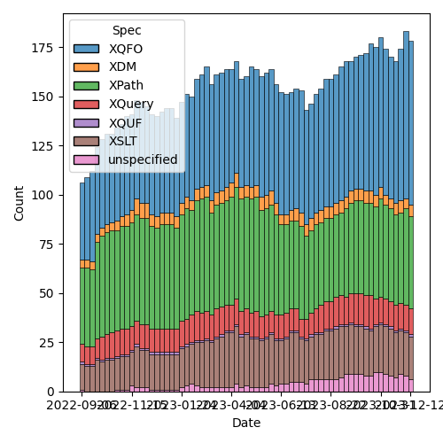
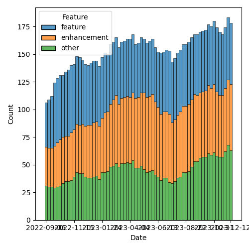

QT4 CG Meeting 059 Minutes 2023-12-19
Table of Contents
- Minutes
- Summary of new and continuing actions
[0/6] - 1. Administrivia
- 2. Technical Agenda
- 3. Any other business?
- 4. Adjourned
Agenda index / QT4CG.org / Dashboard / GH Issues / GH Pull Requests
Minutes
Approved at meeting 060 on 9 January 2024
Summary of new and continuing actions [0/6]
[ ]QT4CG-052-02: NW to consider how to schedule an “editor’s meeting”[ ]QT4CG-052-06: MK to consider the editorial question of “promotion” for the symmetric relations.[ ]QT4CG-055-01: MK to clarify that the return type of the deep lookup operator is a flat sequence.[ ]QT4CG-056-04: MK to write a proposal for adding a select attribute to xsl:text[ ]QT4CG-058-01: MK to clarify infn:numeric-comparethat -0 and +0 are equal.[ ]QT4CG-058-02: MK to consider providing more advice about the pitfalls of mixing decimal and double when sorting
1. Administrivia
1.1. Roll call [5/11]
Regrets: JL, JK, and EP.
[X]Reece Dunn (RD)[ ]Sasha Firsov (SF)[X]Christian Grün (CG)[ ]Joel Kalvesmaki (JK) [:05-][ ]Michael Kay (MK)[ ]John Lumley (JL)[X]Dimitre Novatchev (DN)[ ]Wendell Piez (WP)[ ]Ed Porter (EP)[X]C. M. Sperberg-McQueen (MSM)[X]Norm Tovey-Walsh (NW). Scribe. Chair.
1.2. Accept the agenda
Proposal: Accept the agenda.
Accepted.
1.2.1. Status so far…

Figure 1: “Burn down” chart on open issues

Figure 2: Open issues by specification

Figure 3: Open issues by type
1.3. Approve minutes of the previous meeting
Proposal: Accept the minutes of the previous meeting.
Accepted.
1.4. Next meeting
The next meeting is scheduled for Tuesday, 9 January 2024.
Any regrets for the next meeting?
We will take a holiday recess on 26 December and 2 January, 2024.
1.5. Review of open action items [4/8]
[ ]QT4CG-052-02: NW to consider how to schedule an “editor’s meeting”[ ]QT4CG-052-06: MK to consider the editorial question of “promotion” for the symmetric relations.[ ]QT4CG-055-01: MK to clarify that the return type of the deep lookup operator is a flat sequence.[ ]QT4CG-056-04: MK to write a proposal for adding a select attribute to xsl:text[ ]QT4CG-058-01: MK to clarify infn:numeric-comparethat -0 and +0 are equal.[ ]QT4CG-058-02: MK to consider providing more advice about the pitfalls of mixing decimal and double when sorting
1.6. Review of open pull requests and issues
1.6.1. Blocked
1.6.2. Merge without discussion
The following PRs are editorial, small, or otherwise appeared to be uncontroversial when the agenda was prepared. The chairs propose that these can be merged without discussion. If you think discussion is necessary, please say so.
- PR #903: 892 XPDY0002: Misleading examples
- PR #902: 900 fn:sort, array:sort: Parameter names
- PR #897: 894 - errors in forming function items
- PR #881: 866 Introduce and exploit new numeric-compare() function
Proposal: merge without discussion.
Accepted.
1.6.3. Close without action
It has been proposed that the following issues be closed without action. If you think discussion is necessary, please say so.
- Issue #707: Dynamic Function Calls: Processing Empty Sequences
- Issue #705: Function Coercion: Function Arities
- Issue #51: Generalize lookup operator for function items
- Issue #20: Highlight EBNF grammar differences in the diff versions of the specs
Proposal: close without action.
Accepted.
1.6.4. XSLT focused
The following PRs appear to be candidates for a future XSLT-focused meeting.
- PR #871: Action qt4 cg 027 01 next match
These issues identify the XSLT-focused changes that have been made to the specifications but which have not been established by the community group as the status quo.
- Issue #168: XSLT Extension Instructions invoking Named Templates
1.6.5. Substantive PRs
The following substantive PRs were open when this agenda was prepared.
- PR #909: 893 fn:compare: Support for arbitrary atomic types
- PR #907: 906 fn:deep-equal: unordered → ordered
- PR #905: 898 - relax the constraints on document-uri
- PR #904: 821 Annotations: Make default namespace explicit
- PR #901: 895 Parameters with default values: allow empty sequences
- PR #880: 872 Symmetry: fn:items-at → fn:get
- PR #874: 878 Proposed extension to subsequence
- PR #832: 77 Add map:deep-update and array:deep-update
- PR #737: 295: Boost the capability of recursive record types
1.6.6. Proposed for V4.0
The following issues are labled “proposed for V4.0”.
- Issue #910: Introduce a Kollection object with functions that operate on all types of items that can be containers of unlimited number of "members"
- Issue #908: Function identity: documentation still too vague
- Issue #850: fn:parse-html: Finalization
- Issue #829: fn:boolean: EBV support for more item types
- Issue #716: Generators in XPath
- Issue #689: fn:stack-trace: keep or drop?
- Issue #583: array:replace(), etc
- Issue #557: fn:unparsed-binary: accessing and manipulating binary types
- Issue #340: fn:format-number: Specifying decimal format
- Issue #283: Enumeration types
- Issue #260: array:index-of
- Issue #33: json parsing number type option
- Issue #31: Extend FLWOR expressions to maps
2. Technical Agenda
We concluded that we were insufficiently quorate to take up technical issues.
Happy holidays and merry new year, everyone! Thank you for all the hours of hard work! Looking forward to working with you in 2024!
3. Any other business?
None heard.